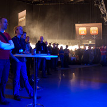

Entertainment
 Entertainment and events during the conference include:
Wake-up show, 9 September
A double espresso should do the trick for shaking off the effects of a bad night's sleep. Maybe you've been up all night getting your stand ready. Maybe you've been putting the finishing touches to your presentation. Maybe the prospect of an exciting conference has given you insomnia. Whatever the cause, a double espresso should do the job and give you the energy and drive you'll need for two days of intense work and fun.
Pre-party at Spektrum
The effects of the morning espresso - not to mention all the others you've had during the day - have begun to wear off. You've had your fill of techie input and are glad to be able to unwind with a beer or a Cola Light. To put it plainly, now is the time for a real "feel good" vibe. Last year, this was when the band played theme music from the computer games of the 1980s. Hardened programmers and gaming visionaries stood there with tears in their eyes, listening to themes from their teenage gaming years. This year we can promise you a feel-good experience to match. What could be better than a pre-party with people all on the same wavelength?
ClubZone
is an offer you can't refuse. ClubZone is our legendary party. Find out more under ClubZone, a great event, sponsored by us and selected partners. Enjoy the company of friends old and new over a coke or a beer, with entertainment and snacks.
Prize draw
The end of the second day sees you in with a chance of being both famous and the envy of your colleagues. Because this is when the winners of all the different competitions taking place during JavaZone will be announced. To add to the sense of occasion, the announcements and commentaries on winners and prizes will be in the hands of professionals. So, even if you haven't won anything, you will at least be guaranteed 45 minutes of laughter.
Scandinavias biggest developer conference